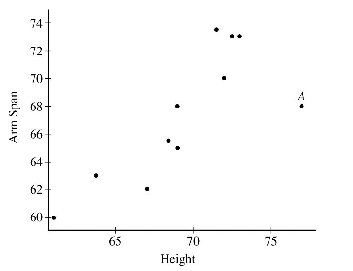

A scatterplot of student height, in inches, versus corresponding arm span length, in inches, is shown below. One
of the points in the graph is labeled \(A\).

If the point labeled A is removed, which of the following statements would be true?
The scatterplot shows a linear positive trend. The \(A\) datapoint is an outlier. Removing it will result in a much better fit of the data, corresponding to a increase in the correlation coefficient. The slope will increase since the \(A\) value is below the line of best fit. Removing it will make the line steeper.